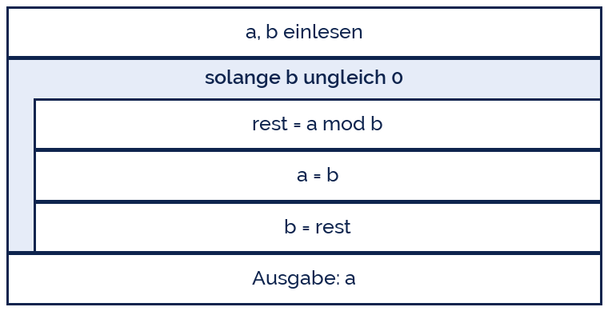

adege
adege
Good morning!
Nur das Schöne wird die Welt retten!
Fjodor Dostojewski
Nicht verzagen, Doc Alvers fragen!
Informatik — Grundkurs 13
Der euklidische Algorithmus
Der älteste Algorithmus der Welt — und wie man iterativ denkt
Nicht verzagen, Doc Alvers fragen!
Kapitel 01
Die Idee
Größter gemeinsamer Teiler ohne Probieren
Nicht verzagen, Doc Alvers fragen!
Der Einfall
Gesucht ist der größte gemeinsame Teiler zweier Zahlen, kurz ggT
Naiv: alle Zahlen von 1 bis zur kleineren durchprobieren — das dauert
Euklid: jeder gemeinsame Teiler von a und b teilt auch a − b
Also darf man die größere Zahl durch die Differenz ersetzen, ohne den ggT zu ändern
Moderne Fassung: statt zu subtrahieren nimmt man den Rest der Division
Nicht verzagen, Doc Alvers fragen!
ggT(48, 18) von Hand
| Schritt | a | b | a mod b |
|---|---|---|---|
| 1 | 48 | 18 | 12 |
| 2 | 18 | 12 | 6 |
| 3 | 12 | 6 | 0 |
| Ergebnis | 6 | der letzte Rest ungleich null |
Man ersetzt a durch b und b durch den Rest — bis der Rest null ist
Dann steht der ggT in b. Drei Schritte statt achtzehn Versuche
Nicht verzagen, Doc Alvers fragen!
Kapitel 03
Üben
Drei iterative Klassiker
Nicht verzagen, Doc Alvers fragen!
Der Algorithmus in Python
def ggt(a, b):
while b != 0:
a, b = b, a % b # gleichzeitige Zuweisung
return a
print(ggt(48, 18)) # 6
print(ggt(1071, 462)) # 21Nicht verzagen, Doc Alvers fragen!
Kapitel 02
Iterativ denken
Vom Einzelfall zur Schleife
Nicht verzagen, Doc Alvers fragen!
Der Algorithmus als Struktogramm
Der Rumpf verändert a und b — deshalb endet die Schleife
Der Rest wird bei jedem Durchlauf kleiner und ist nie negativ
Damit ist bewiesen: der Algorithmus terminiert immer
Genau diese Begründung verlangt eine Klausuraufgabe

Nicht verzagen, Doc Alvers fragen!
Iterative Lösungen systematisch entwickeln
| Schritt | Frage |
|---|---|
| 1. Zustand | Welche Variablen beschreiben den Zwischenstand? |
| 2. Startwert | Womit beginnen sie? |
| 3. Schritt | Wie kommt man vom Zustand zum nächsten? |
| 4. Abbruch | Wann ist man fertig? |
| 5. Ergebnis | Wo steht die Antwort am Ende? |
Beim Euklid: Zustand (a, b), Start die Eingaben, Schritt der Rest, Abbruch b = 0, Ergebnis a
Diese fünf Fragen tragen jede iterative Aufgabe
Nicht verzagen, Doc Alvers fragen!
Drei Aufgaben zum Selbstbauen
# 1. Fakultaet iterativ
def fakultaet(n):
ergebnis = 1
for i in range(2, n + 1):
ergebnis = ergebnis * i
return ergebnis
# 2. Quersumme -> selbst schreiben
# 3. kgV mit Hilfe des ggT: a * b // ggt(a, b)Nicht verzagen, Doc Alvers fragen!
Beim Euklid wird der Rest bei jedem Schritt kleiner und nie negativ. Deshalb endet er — das ist die Begründung, nicht das Gefühl.
Merksatz
Nicht verzagen, Doc Alvers fragen!
Fun Facts: Euklid
Der Algorithmus steht in Euklids Elementen, um 300 v. Chr. — er ist über 2300 Jahre alt
Er gilt als der älteste noch benutzte Algorithmus der Welt
Der schlechteste Fall sind aufeinanderfolgende Fibonacci-Zahlen
Die Anzahl der Schritte wächst nur logarithmisch mit der Größe der Zahlen
Deshalb rechnet er auch mit tausendstelligen Zahlen in Sekundenbruchteilen
Nicht verzagen, Doc Alvers fragen!
Eure Aufgabe
Rechnet ggT(1071, 462) von Hand in einer Tabelle nach
Setzt den Algorithmus in Python um und prüft ihn an fünf Paaren
Schreibt die Quersumme iterativ — mit den fünf Fragen aus Kapitel 2
Berechnet das kgV mit Hilfe eures ggT
Begründet in zwei Sätzen, warum der Euklid immer endet
Nicht verzagen, Doc Alvers fragen!